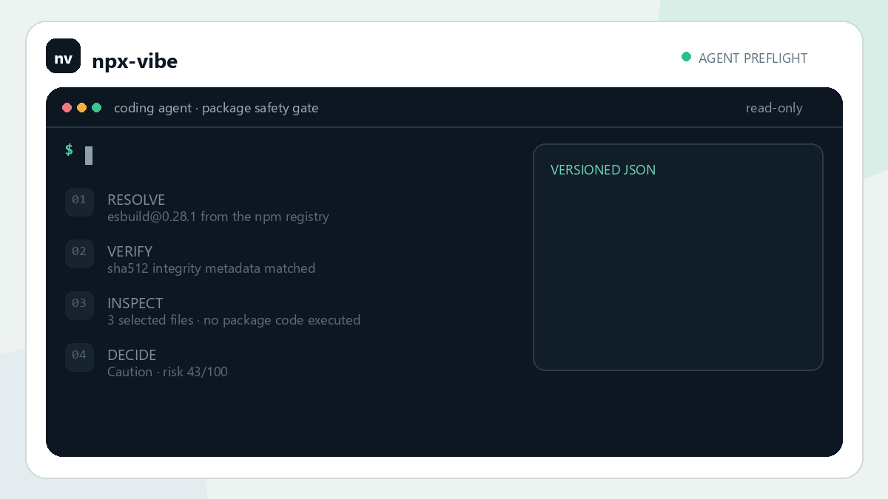
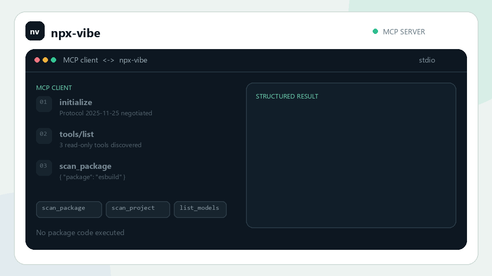

01
Developer CLI
Inspect one package, guard an npx command, or review every direct project dependency.
npx npx-vibe --check <package>
Evidence-first npm package checks
npx-vibe verifies npm tarballs, inspects install-time behavior, and shows the source evidence behind every decision—before a developer or coding agent executes the package.
npx npx-vibe --check esbuild

The safety pause
The fast path is deterministic, local, and key-free. A model can add interpretation when you explicitly request it, but source evidence remains the authority.
Pin the exact npm version, using the lockfile when a project provides one.
Download without execution and validate npm's published integrity metadata.
Review lifecycle hooks and selected files for network, shell, secret, and obfuscation signals.
Return Proceed, Caution, or Block with the lines that explain why.
One safety contract
The same read-only scanner works in a terminal, inside a coding-agent workflow, or as discoverable MCP tools.
Inspect one package, guard an npx command, or review every direct project dependency.
npx npx-vibe --check <package>
Teach compatible coding agents when to continue, request approval, stop, or retry.
--agent <package>
Expose schema-backed, read-only inspection tools directly to MCP-compatible clients.
npx-vibe --mcp
New in 1.5
Agent Skill
A versioned JSON contract normalizes every result into
continue, review, stop, or retry.
Caution always returns control to a human.
npx skills add Devrajsinh-Jhala/NPM-Vibe-check --skill npx-vibe -g

Model Context Protocol
scan_package, scan_project, and list_models
return structured content without package execution or credentials in tool arguments.
{
"mcpServers": {
"npx-vibe": {
"command": "npx",
"args": ["--yes", "npx-vibe@latest", "--mcp"]
}
}
}
Reports you can audit
A typical clean package scan. No API key, model, or package execution is involved.
No meaningful deterministic risk signal was found.
Reviewable behavior requires human judgment.
Critical or high-risk source evidence was detected.
Project preflight
Scan direct registry dependencies from package.json, resolve exact versions
from package-lock.json, and emit local, JSON, agent, or GitHub Actions output.
npx npx-vibe --project .
$ npx npx-vibe --project .
! my-app: Caution highest risk 43/100
Scanned 12/12 direct dependencies
Proceed 11
Caution 1
Block 0
CAUTION 43/100 esbuild@0.28.1
lifecycle_hook, network_and_shell
No dependency or package code was executed.Optional AI review
Heuristics always run first. If you opt in, choose local Ollama or an online provider, select a maintained profile or exact model, and see which model produced the result.
Start with the key-free path
No account, global install, or AI key is required.
npx npx-vibe --check <package>
npx-vibe is a pre-execution scanner, not a sandbox, antivirus product, or formal audit. Proceed is a useful review signal—never proof that a package is safe.